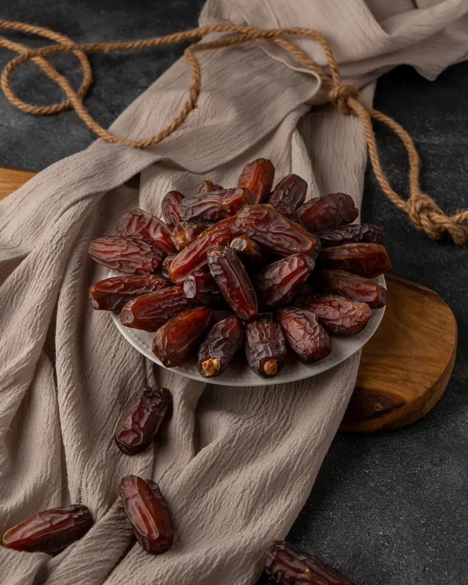
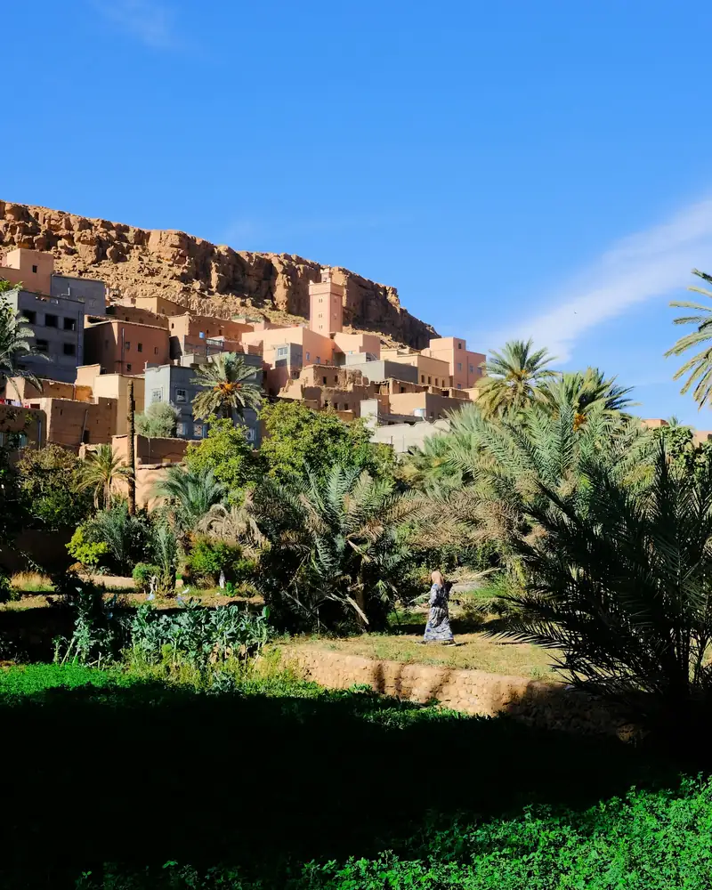
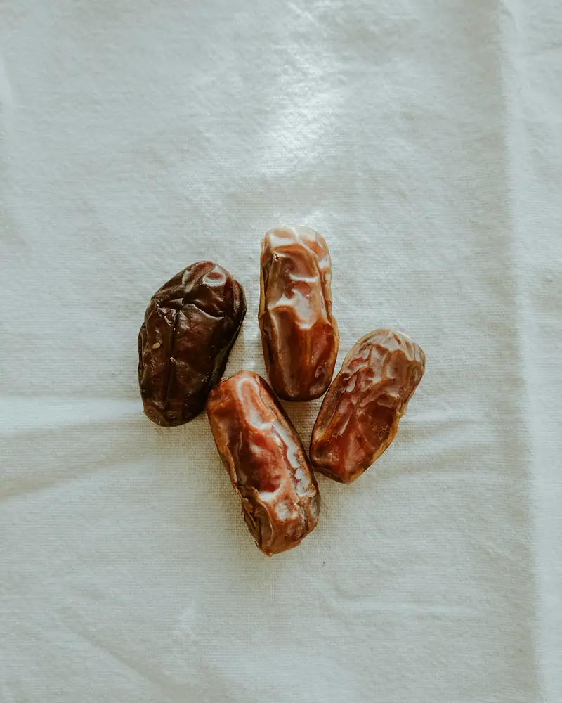
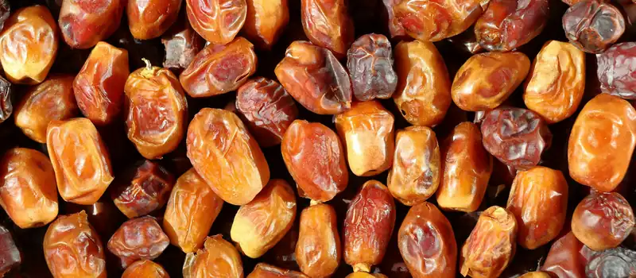

Dattes Medjool premium
Gros calibres charnus et moelleux, idéaux pour la dégustation, les fêtes et les cadeaux.
- Calibres selon disponibilité (ex. Jumbo, Large, Medium)
- Fruits entiers, avec noyau
Errachidia · Tafilalet · Maroc
Dattes Mejhoul charnues, moelleuses et naturellement sucrées, issues des palmeraies d'Errachidia. Pour les particuliers, les commerces et les importateurs : dattes medjool en gros, au détail et à l'export.
Prix, calibres et disponibilités : réponse personnalisée sur WhatsApp.


Origine & terroir
Au sud-est du Maroc, la région d'Errachidia et le Tafilalet sont le berceau historique de la datte Mejhoul. Le climat chaud et sec des oasis, l'eau des palmeraies et le savoir-faire local donnent des fruits généreux à la chair fondante et au goût de caramel.
Nous proposons des dattes medjool du Maroc sélectionnées avec soin, pour la consommation, la revente ou la distribution. Chaque demande est traitée en direct : vous nous dites ce dont vous avez besoin, nous vous répondons avec une offre adaptée.
Les dattes Medjool sont récoltées à maturité, à la saison, dans les palmeraies de la région.
Les fruits sont triés selon leur aspect, leur texture et leur calibre avant d'être conditionnés.
Vrac, cartons ou boîtes : le format est choisi selon votre usage et votre destination.
Produits & conditionnement
Dattes Mejhoul du Maroc pour la table, la boutique ou l'import. Les calibres et formats disponibles dépendent de la récolte : demandez-nous la disponibilité du moment.

Gros calibres charnus et moelleux, idéaux pour la dégustation, les fêtes et les cadeaux.
Pour grossistes, épiceries fines, restaurateurs et importateurs à la recherche d'un fournisseur de dattes medjool au Maroc.
Des formats soignés pour la revente, le Ramadan, les fêtes de fin d'année ou les cadeaux d'entreprise.
Pourquoi nous choisir
Des dattes issues de la région d'Errachidia, référence historique de la Mejhoul au Maroc.
Une seule variété, la Medjool (Mejhoul) : grosse, tendre, au goût riche de caramel et de miel.
Calibre, format et quantité selon votre projet, du particulier au professionnel.
Une question, un devis, une commande : tout se règle simplement sur WhatsApp.
Qualité & certifications
Nous voulons que chaque datte Medjool du Maroc que vous recevez soit à la hauteur de sa réputation.
Vous êtes importateur ou distributeur ? Contactez-nous sur WhatsApp pour vérifier ensemble les documents, fiches produit et certifications nécessaires pour votre marché.
Contactez-nous sur WhatsAppCe que nos clients recherchent
Une datte fondante, sucrée naturellement, qui se suffit à elle-même.
Des fruits homogènes en taille et en aspect, d'une commande à l'autre.
Un interlocuteur joignable, des réponses claires et un devis rapide à obtenir.
Questions fréquentes
Il s'agit de la même variété. « Mejhoul » est le nom d'origine marocaine, « Medjool » est l'orthographe la plus utilisée à l'international. Elle est réputée pour sa grande taille, sa chair moelleuse et son goût de caramel.
Nos dattes viennent du Maroc, de la région d'Errachidia – Tafilalet, dans le sud-est du pays, berceau historique de la datte Mejhoul.
Oui. Nous répondons aux demandes des particuliers comme des professionnels (grossistes, commerces, restaurateurs, importateurs). Indiquez-nous la quantité souhaitée sur WhatsApp pour recevoir un devis.
Les calibres et formats (vrac, cartons, boîtes, coffrets) dépendent de la récolte et de votre besoin. Écrivez-nous sur WhatsApp pour connaître les disponibilités du moment.
Les demandes d'export sont étudiées au cas par cas. Les conditions (documents, transport, délais) dépendent du pays de destination : contactez-nous sur WhatsApp pour en parler.
Envoyez-nous un message sur WhatsApp en précisant le produit, la quantité et la ville ou le pays de livraison. Nous vous répondons avec une offre personnalisée.
Conservez-les dans un endroit frais et sec, à l'abri de la lumière, dans un contenant fermé. Au réfrigérateur, elles gardent plus longtemps leur moelleux.

Prix, calibres, quantités, livraison : écrivez-nous sur WhatsApp, nous vous répondons personnellement.